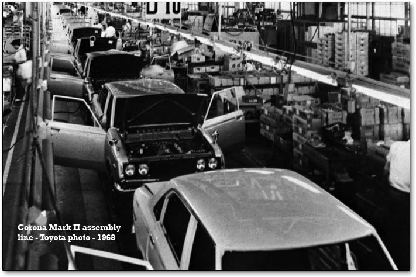
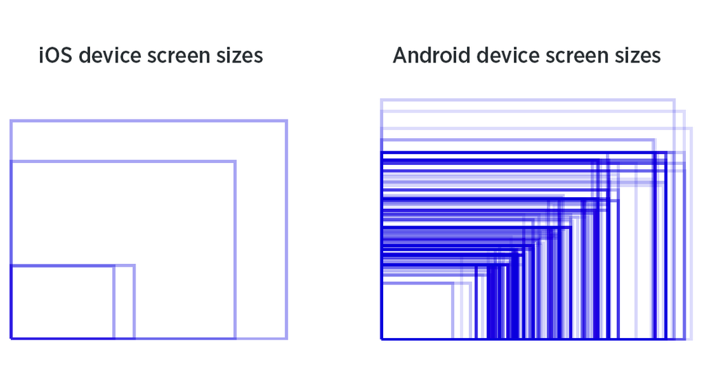
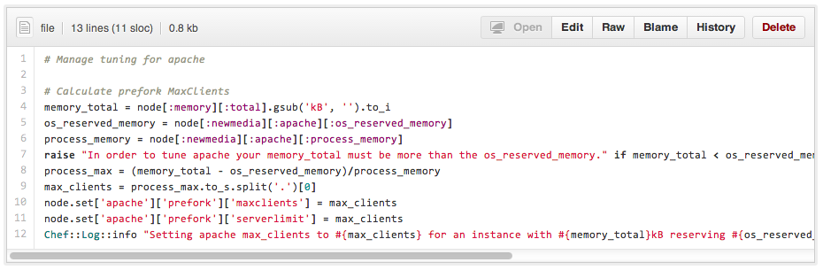

Balancing Infrastructure Flexibility and Standardization Using Chef Roles, Attributes, and Templates.
Rick Manelius (@rickmanelius)
Drupal DevOps Meetup
12/19/2013
Drupal DevOps Meetup Goals
- Elevate the discussion.
- Provide usable tools & next actions.
- Reach beyond the Drupal community.
- Distribute the information.
- Become better badasses in DevOps.
The Talk: Breaking it Down
- The Tension: How Can I Standardize AND Be Flexible?
- The Tutorial: How Do I Do It?
- The Take Away: Can We Have It All?
The Tension: Standarization
- The Rise Of Higher Order Systems
- Example: Transistor, Logic Gates, CPUs, Circuit Boards, Computers, Cloud, ???
- Goal: Leave the monkey work to the machines.
- Goal: Focus as much time on creating value.
- Standardization is a "Good Thing"TM
Infrastructure as Code
Configuration Management
- Reproducible
- Testable
- Reliable
- Abstract-able
Tools: Chef, Puppet, CFEngine, Ansible.
Tension: "But We're a Snowflake!"
- Business Needs
- Differentiation
- Creativity
- Standardization is a "Good Thing"TM
What Do We Do?
- Do we take the factory approach to achieve consistency?
- Do we take the blank canvas approach to achieve flexibility?
- Or can we take the best of both worlds?


Standardization vs Flexibility
Example: iOS vs Android.

Is iOS to rigid?
Is Android to fragmented?
Standardization vs Flexibility
Example: GI Joe vs Mr. Potato Head vs Legos
- One you just buy (GI Joe)
- One you build (Legos)
- One you buy and build (Mr Potato Head)


We’ve Been Here Before…
- Package Management vs Makefiles
- Framework vs Products
- Version Control vs FTP
- Code vs Configuration vs Content
- Drupal Distributions vs Standard Install
- Drupal Features vs UI Changes
So… Why Should I Care?
- "Works on my machine" is not acceptable.
- 10-20% of developer time wasted on LAMP.
- Complexity is increasing.
- Expectations are rising.
- Short term: competitive advantage.
- Long term: survival.
HOWTO
Let’s zoom in from the big picture…
Chef 101
- Configuration, Deployment Tool
- Cookbooks
- Recipes
- Attributes
- Templates
- Roles + Databags
Recipes (what can I build?)
- Analogy: a meal consist of multiple recipes.
- Pick and choose from a cookbook.
- Selections placed in a role file.
- Examples:
- “recipe[sudo]”
- "recipe[openssh]"
Attributes (how can I change?)
- Life would be boring without variables.
- Defined in a cookbook
- Overridable by cookbooks, roles, data-bags
- Examples:
- default[:drupal][:drush][:dir] = “/opt/d“
Templates (how can I express a change?)
- Overridable (same file name)
- Alternatives (different file name)
- Examples: php.ini, my.cnf
Roles (how can I combine?)
Roles allow us to combine and layer.
- Base (LAMP)
- Drupal (Application foundation)
- Site (Site specific customization)
Data-bags (what are my credentials?)
- Typically usernames, passwords, keys, etc

Walkthrough: drupal-lamp
- URL: https://github.com/cyberswat/drupal-lamp
Going Further
Here we are tuning apache based on the server's ram.

And Beyond...
- This is just the beginning.
- Start: github.comcyberswat/drupal-lamp
- Give us feedback!
- Share your results!
- Contribute!
The Takeaways
- Configuration management/provisioning tools are awesome.
- Chef cookbooks contain the pieces.
- Recipes are the basic building blocks.
- Attributes, templates, and roles allow you to sculpt things further.
- Data-bags provide credentials, etc.
The Takeaways
- Layering effect at all layers of abstraction.
- Stay uniform or vary it up
- Everything still all in code and trackable
- Just don't go *too* crazy!
- Automate provisioning and deployments.
- Reduce overhead, focus on creativity!
Questions
- Thank you for your time!
- PS
- Sign up for the next meet-up.
- Visit gitub.com/cyberswat/drupal-lamp
- Follow us on twitter @newmediadenver
/